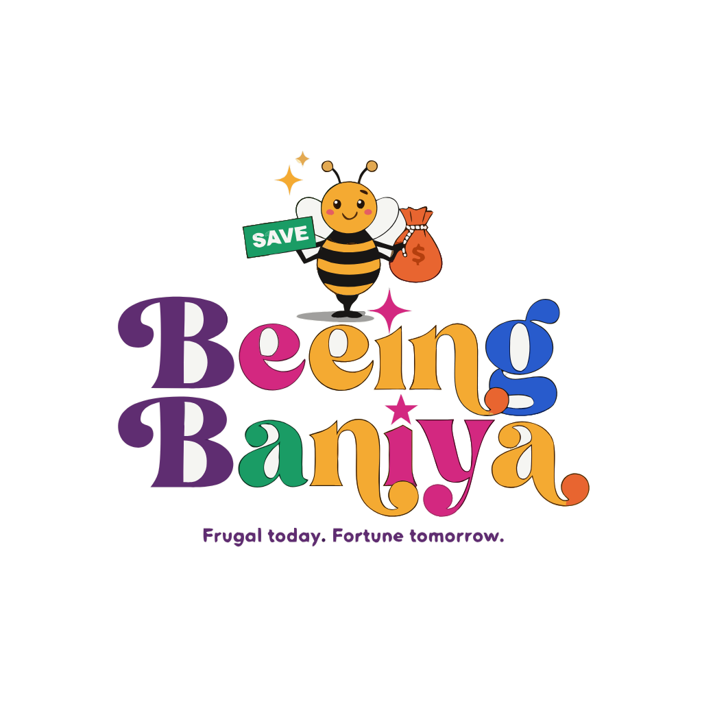
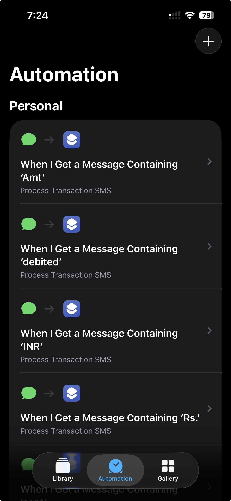

BeeingBaniya is a live personal-finance product for Indian bank customers. Your phone forwards each transaction SMS, an LLM turns it into a categorized, searchable transaction, and budgeting + trends do the rest — with zero manual entry.
Frugal today. Fortune tomorrow.

The problem
Indian banks still text an alert for nearly every debit and credit. That is a live stream of exactly where your money goes — but it sits as unstructured text in the Messages app, and logging expenses by hand is tedious enough that most people give up.
What it does
Ingestion is automatic; everything downstream — categorization, budgets, trends and a weekly recap — builds on that clean, structured stream.
An iPhone Shortcuts automation (or a macOS Messages daemon) forwards each incoming bank SMS to a secure webhook. No typing, no imports.
An LLM reads each message, decides its type (spend, credit, OTP, EMI, investment, invalid…) and pulls out amount, merchant, date and category.
Month-to-date spend versus the prior period, spend-by-category charts with clickable slices, and a merged manual + SMS transaction table.
Monthly-spend line chart with an OLS trendline, per-category multi-line comparison, and credit-card-payment / investment trends over a configurable window.
A monthly overall budget with per-category allocations and a cumulative "spend-left" line — overspend carries forward as negative balance, not a bar that just fills up.
Recategorize a transaction once and the app writes a keyword rule keyed on that merchant — the same SMS shape skips the LLM next time. Accuracy compounds; cost drops.
A short LLM-written recap of the week — biggest areas, spikes and outliers — delivered on the dashboard and by email.
One click opens a demo account seeded with a year of synthetic Indian finance data — explore the full product with no account and nothing real exposed.
A SwiftUI / Liquid Glass app whose SMS-filter extension can auto-capture bank texts on-device, with explicit consent — currently in TestFlight.
How it works — engineering blueprint
Both ingestion sources hit a single webhook. The synchronous path stays fast and idempotent; the expensive AI work runs after the response, in the same serverless invocation — no external queue.
webhook_token.raw_messages row with sms_type = null (the "processing" state) and return 200.sms_transactions row for debits.A provider-pluggable LLM layer with a per-feature config that's overridable by environment variable — the model can change with no code edit. It runs on Anthropic's Claude today, and can switch to Google GenAI, OpenAI or DeepSeek by config.
| Task | Model | Why |
|---|---|---|
| Classify every SMS | Claude Haiku | High-volume hot path — cost-optimized, fast. |
| Fallback & messy-merchant extract | Claude Sonnet | Rare, quality-critical — "prefer null over a guess." |
| Weekly summary | Claude Sonnet | Longer reasoning for a readable recap. |
Anthropic calls go through @anthropic-ai/sdk; the Gemini provider uses @google/genai.
Postgres on Supabase, accessed via a service-role client with user_id scoping enforced in code. Category descriptions and user-defined transaction types feed back into the classifier prompt.
Ingestion, from the phone
iOS runs a personal automation whenever a message contains a money keyword — Amt, debited, INR or Rs. — and hands it to a single "Process Transaction SMS" shortcut that POSTs the text to the webhook.

The product, live
Every automated decision is auditable — each transaction is tagged with whether a rule or the AI categorized it, so you always know why something landed where it did. The dashboard, trends and budgets all read from the same clean stream.
How it was built
One builder, a tight loop, and production feedback. Every change starts as a tracked issue, gets designed, implemented on a branch by coding agents, QA'd on a Vercel preview, then merged to auto-deploy.
Multi-area features are decomposed and dispatched to parallel coding agents against a shared spec, so independent slices land without stepping on each other.
Web and iOS integrate only through a versioned API contract — two independent agents can build both clients without coordinating, as long as the contract holds.
No background queue (after() on the same invocation), type errors guarded by a test suite rather than blocking builds — decisions made in writing, not by accident.
Product & customer thinking
The interesting decisions aren't in the framework choices — they're in what the product chooses to optimize for its user.
Trust dies quietly when a genuine transaction vanishes. The system leans toward capturing, and makes over-captures cheap to fix and easy to de-duplicate.
Every manual correction becomes a rule. Over time more traffic bypasses the LLM — accuracy compounds while per-message cost falls.
Every categorization records whether a rule, the AI, or you set it. "Why did this land here?" always has an answer.
A fast, cheap model on the every-message path; a stronger model reserved for the rare, quality-critical work. Economics decided per call site.
A one-click sandbox with a year of synthetic data lets anyone feel the full product before committing an account.
Not a bar that fills up. A cumulative running balance where overspend carries forward — the number tells you the truth about the month.
Open the sandbox with one click — a full year of synthetic data, no signup — or sign in and connect your own SMS feed.